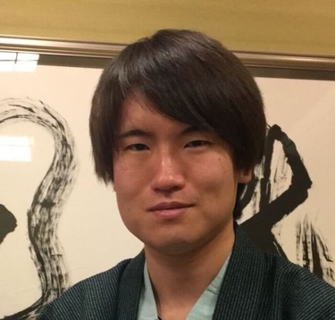

Profile
有山 知希(Tomoki Ariyama)

· About
o An undergraduate student at Tohoku University (B4)
o Member of Inui laboratory (Tohoku NLP lab)
· Interests
o Natural Language Processing
o Knowledge Base
· Publications
o 長澤春希*, 工藤慧音*, 宮脇峻平, 有山知希, 成田風香, 岸波洋介, 佐藤志貴, 乾健太郎. aoba_v2 bot: 多様な応答生成モジュールを統合した雑談対話システム. 人工知能学会 言語・音声理解と対話処理研究会(SLUD)第93回研究会 第12回対話システムシンポジウム, November 2021. (*Equal contribution)
o 有山知希, Benjamin Heinzerling, 乾健太郎. BERTの世界知識はどこにある？学習済み言語モデルにおける知識の局所性を解明する. NLP若手の会（YANS）第16回シンポジウム, August 2021.
· Awards
o 人工知能学会 言語・音声理解と対話処理研究会(SLUD)第93回研究会 第12回対話システムシンポジウム 対話システムライブコンペティション4 優秀賞(第3位), November 2021.
§ 長澤春希*, 工藤慧音*, 宮脇峻平, 有山知希, 成田風香, 岸波洋介, 佐藤志貴, 乾健太郎. aoba_v2 bot: 多様な応答生成モジュールを統合した雑談対話システム.
· Experience
o Apr.2018-Present.: BEng, Department of Electrical, Information and Physics Engineering, Tohoku University
· Skills
o Python
· Hobbies
o Soft tennis
o Motorcycle
· Contact
o Email: tomoki.ariyama.s3__at__dc.tohoku.ac.jp
§ Please replace __at__ for @
o Github: https://github.com/tomokiariyama